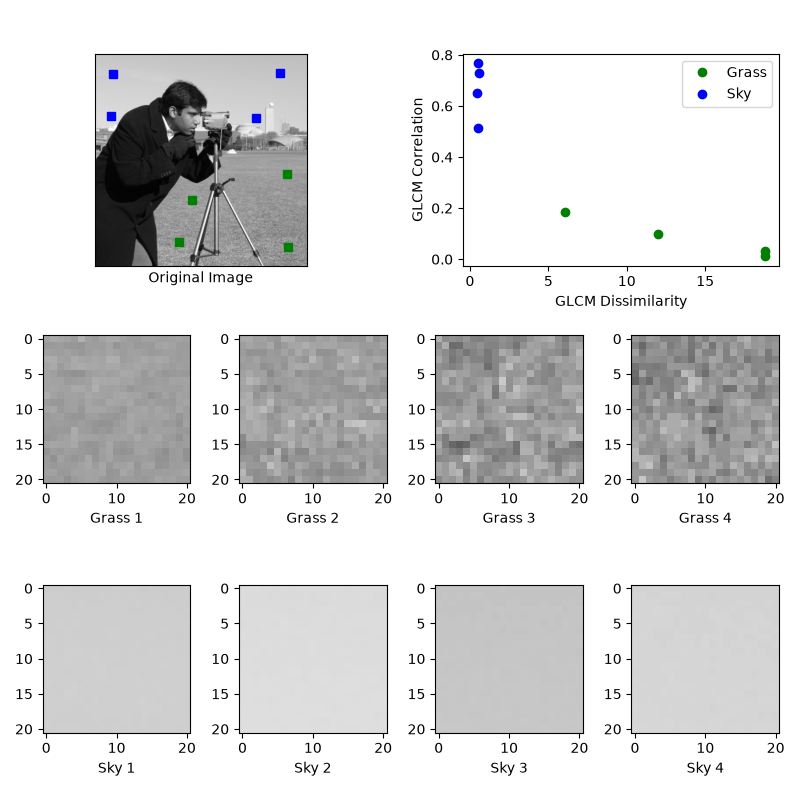

Note
Go to the end to download the full example code or to run this example in your browser via Binder
GLCM Texture Features#
This example illustrates texture classification using gray level co-occurrence matrices (GLCMs) [1]. A GLCM is a histogram of co-occurring grayscale values at a given offset over an image.
In this example, samples of two different textures are extracted from an image: grassy areas and sky areas. For each patch, a GLCM with a horizontal offset of 5 (distance=[5] and angles=[0]) is computed. Next, two features of the GLCM matrices are computed: dissimilarity and correlation. These are plotted to illustrate that the classes form clusters in feature space. In a typical classification problem, the final step (not included in this example) would be to train a classifier, such as logistic regression, to label image patches from new images.
Changed in version 0.19: greymatrix was renamed to graymatrix in 0.19.
Changed in version 0.19: greycoprops was renamed to graycoprops in 0.19.
References#

import matplotlib.pyplot as plt
from skimage.feature import graycomatrix, graycoprops
from skimage import data
PATCH_SIZE = 21
# open the camera image
image = data.camera()
# select some patches from grassy areas of the image
grass_locations = [(280, 454), (342, 223), (444, 192), (455, 455)]
grass_patches = []
for loc in grass_locations:
grass_patches.append(
image[loc[0] : loc[0] + PATCH_SIZE, loc[1] : loc[1] + PATCH_SIZE]
)
# select some patches from sky areas of the image
sky_locations = [(38, 34), (139, 28), (37, 437), (145, 379)]
sky_patches = []
for loc in sky_locations:
sky_patches.append(
image[loc[0] : loc[0] + PATCH_SIZE, loc[1] : loc[1] + PATCH_SIZE]
)
# compute some GLCM properties each patch
xs = []
ys = []
for patch in grass_patches + sky_patches:
glcm = graycomatrix(
patch, distances=[5], angles=[0], levels=256, symmetric=True, normed=True
)
xs.append(graycoprops(glcm, 'dissimilarity')[0, 0])
ys.append(graycoprops(glcm, 'correlation')[0, 0])
# create the figure
fig = plt.figure(figsize=(8, 8))
# display original image with locations of patches
ax = fig.add_subplot(3, 2, 1)
ax.imshow(image, cmap=plt.cm.gray, vmin=0, vmax=255)
for y, x in grass_locations:
ax.plot(x + PATCH_SIZE / 2, y + PATCH_SIZE / 2, 'gs')
for y, x in sky_locations:
ax.plot(x + PATCH_SIZE / 2, y + PATCH_SIZE / 2, 'bs')
ax.set_xlabel('Original Image')
ax.set_xticks([])
ax.set_yticks([])
ax.axis('image')
# for each patch, plot (dissimilarity, correlation)
ax = fig.add_subplot(3, 2, 2)
ax.plot(xs[: len(grass_patches)], ys[: len(grass_patches)], 'go', label='Grass')
ax.plot(xs[len(grass_patches) :], ys[len(grass_patches) :], 'bo', label='Sky')
ax.set_xlabel('GLCM Dissimilarity')
ax.set_ylabel('GLCM Correlation')
ax.legend()
# display the image patches
for i, patch in enumerate(grass_patches):
ax = fig.add_subplot(3, len(grass_patches), len(grass_patches) * 1 + i + 1)
ax.imshow(patch, cmap=plt.cm.gray, vmin=0, vmax=255)
ax.set_xlabel(f"Grass {i + 1}")
for i, patch in enumerate(sky_patches):
ax = fig.add_subplot(3, len(sky_patches), len(sky_patches) * 2 + i + 1)
ax.imshow(patch, cmap=plt.cm.gray, vmin=0, vmax=255)
ax.set_xlabel(f"Sky {i + 1}")
# display the patches and plot
fig.suptitle('Grey level co-occurrence matrix features', fontsize=14, y=1.05)
plt.tight_layout()
plt.show()
Total running time of the script: (0 minutes 0.682 seconds)